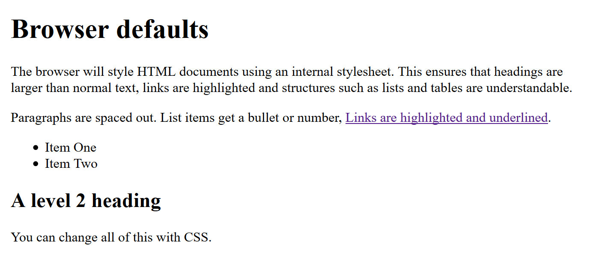

За какво е този урок?
Ще свържете външен CSS файл, ще прилагате селектори и ще проверявате каскадата и невалидните декларации в малък уеб проект.
Четете обясненията, изпробвайте действията и запазвайте работата си. Отворените въпроси показват примерен отговор след предаване. При собствена тема са възможни различни обосновани решения.
Три начина за включване на CSS
Стил (Style)
Атрибутът style се използва за задаване на визуален стил на даден HTML елемент, например цвят, размер, шрифт и др. Форматът му е:

<tagname style="property: value;">
Пример:
<h1 style="color: blue;">Заглавие в синьо</h1>
Задава цвета на текста в елемента h1 като син.
<p style="background-color: #ffff00;">Това е параграф с
жълт фон.</p>
Задава цвета на фона на елемента p като жълт.
Този стил се нарича вграден (inline) и важи само за елемента, за който е зададен.
Задача 1.
Задача 1. Задайте оранжев фон на заглавието на първия обект (div id="1" ) в страницата "site\pois.html" от приложените материали.
За целта трябва да отворите страницата и да намерите тага <h2>, с който е оградено заглавието. Променете го, като му добавите атрибута style="background-color: #ff6600;" (#ff6600 е код на оранжев цвят). Запишете файла и го тествайте в браузъра.
По този начин променихме цвета на един елемент. За да направим това за всички подобни елементи, можем да използваме т.нар. CSS.
Cascading Style Sheets (CSS)
CSS (англ. Cascading Style Sheets – каскадни таблици със стилове) е език за описание на стилове, който се използва заедно с HTML. Той е създаден за лесно управление на визуалното представяне на съдържанието (шрифтове, размери, цветове, фонове, полета и др.), без да се налага промяна на самите HTML елементи. CSS е мощен инструмент, който с редактиране на един или няколко параметъра може да промени външния вид на целия сайт.
Три начина за включване на CSS
CSS може да се приложи по 3 начина:
- Вграден (inline) – чрез атрибута style на конкретен елемент, важи само за него (както направихме в предната задача).
- Вътрешен (internal) – като блок със стилове, затворени в тага
<style>, засяга елементите само в текущата страница. - Външен (external) – стиловете са описани в отделен текстов файл с разширение .css. Връзката към него се задава с елемент
<link>в заглавната част<head>. Това дава възможност да се приложи един набор от стилове към десетки уеб страници в голям сайт, както и да се задават комбинации от няколко .css файла в зависимост от съдържанието на страницата.
Пример:
<!DOCTYPE html>
<html>
<head>
<link rel="stylesheet" type="text/css" href="styles.css">
</head>
<body>
.....
</body>
</html>
Задача 2.
Задача 2. Отворете файла index.html от папката "site". Намерете къде има вмъкната връзка към css файл. Вижте името му, отворете го в редактора Notepad++ и го разгледайте.
Правило, декларация и селектор
Нива на CSS
CSS1 е приет през 1996 г., а CSS2.1 — като препоръка през 2011 г. При развитието на CSS новите възможности обикновено разширяват старите. От CSS3 нататък спецификациите са разделени на модули, които се развиват независимо и имат собствени нива. Затова съвременният CSS не се описва точно с една обща версия. Различните модули са на различни етапи на развитие.
Мерни единици в CSS
Размерите използват абсолютни единици като px, mm и cm и относителни като em, rem и %. За font-size единицата em се отнася към размера на родителя; при много други свойства — към размера на шрифта на самия елемент. Rem се отнася към коренния елемент. Базата за % зависи от свойството: например width обикновено се отнася към ширината на съдържащия блок. Числото и единицата се пишат слято.
Работа с езика Cascading Style Sheets (CSS)
CSS кодът представлява последователност от правила, всяко от които започва със селектори, последвани от блок с дефиниции от свойства и стойности, които им се присвояват. Обобщената структура на едно CSS правило е:
селектор1, селектор2, ... {
свойство1: стойност;
свойство2: стойност;
............
}
Каскадата определя кое CSS правило има предимство, когато няколко правила задават едно и също свойство. Отделно от нея работи наследяването: някои свойства, например цвят и шрифт, се предават от родителя към вложените елементи. Затова размерът на текста, зададен за таблица, може да се наследи от клетките, а шрифтът на body — от текста в страницата. Свойства като рамка, margin и padding не се наследяват автоматично.
Синтаксис на декларациите
Двойките свойство – стойност се разделят с двоеточие ( : ), а всяка такава дефиниция завършва с точка и запетая ( ; ). Списъкът от всички свойства се загражда в големи скоби {...}. Тъй като новите редове се игнорират, цялото правило и дори целият CSS файл могат да се напишат на един ред или да се разделят за по-добра четивност.
Как селекторът избира елементи
Селекторът е шаблон, описващ по определени правила елементите, върху които се прилага правилото. Например селекторът "div" ще съвпадне с всички <div> елементи, а селекторът "div h1" – с елементите <h1>, които са вложени в <div> елемент. Селекторите могат да бъдат няколко, разделени със запетаи. В такъв случай зададените свойства се отнасят за всеки от тях.
Прилагане и проверка на правилата
Задача 3.
Задача 3. Сменете цвета на всички заглавия на забележителности в страница pois.html, като използвате наличния CSS файл от папката "site".
Можем да използваме факта, че всяка забележителност е сложена в таг <div> с class="poiBlock". Затова чрез селектора ".poiBlock h2" можем да влияем само на елемента h2 в <div class="poiBlock">, без да засегнем останалата част от страницата. Отворете в Notepad++ CSS файла от разработвания сайт и намерете горния селектор. Той е създаден, но няма стойности. Добавете в него реда "background-color: #f3a032;". В него "background-color" е свойство, а "#f3a032;" – стойност. Запишете CSS файла и проверете как се е променила страницата pois.html.
Числа и мерни единици
Когато задаваме стойности в CSS, не трябва да има интервал между числото и мерната единица, напр. "10px" или "80%". На някои свойства може да се задават няколко стойности наведнъж, като те се разделят с интервал, напр. "border: solid 1px red;" ще зададе на елемента червена, плътна рамка с дебелина 1 пиксел. Може да се зададе списък от стойности, разделени със запетая, напр. "font-family: Tahoma, sans-serif" ще форматира текста с шрифт Tahoma или, ако не е наличен – с шрифт sans-serif. Ако стойността съдържа интервал, напр. ако името на шрифта е Open Sans, то се поставя в кавички (единични или двойни).
Пример:
p, div {
font-family: Calibri, 'Open Sans', sans-serif;
font-size: 18px;
border: solid 1px red;
line-height: 130%;
}
Разчитане на примерното правило
Това правило ще се приложи към всички <p> и <div> елементи. То ще направи шрифта на символите Calibri с размер 18 пиксела, височина на реда – 130% от размера на шрифта, т.е. 23.4 пиксела, и ще огради елементите с червена рамка. Ако не намери шрифта Calibri, браузърът ще потърси Open Sans, а при неуспех – sans-serif.
Задача 4.
Задача 4. Отворете файла "styles.css" и променете правилото за <body>, като напишете интервал в размера на шрифта (font-size: 18 px;). Презаредете. Невалидната декларация се игнорира, но видима промяна не е гарантирана — размерът може да съвпадне с наследения. Проверете изчислената стойност в инструментите на браузъра и накрая възстановете font-size: 18px;.
Цветове и коментари
Цветове в CSS
Формати за задаване на цвят
В CSS се използват няколко формата за описание на цветове. Най-често използвани са:
с име
с име – в CSS са специфицирани именувани цветове на английски, напр. red, green, coral, gold, indigo и т.н.
#RRGGBB
#RRGGBB – шестнайсетичен код, където RR е шестнайсетичната стойност на червеното в желания цвят, описан по RGB цветовата схема. Може да приема стойност от 00 до ff, което съответства на 256 степени (нюанса). GG и BB са съответно стойностите на зелено и синьо. Така черен цвят се описва като #000000, бял – #ffffff, червен – #ff0000, жълт – #ffff00, и т.н. Някои цветове могат да се запишат кратко с 3 цифри (#RGB), напр. #f00 е същото като #ff0000 (червен), а #ff0 е жълт (#ffff00).
rgb(red, green, blue)
rgb(red, green, blue) – функция с параметри интензитетите на трите основни цвята (червен, зелен, син), зададени като степен от 0 до 255 или като процент. Червеният цвят ще се опише като rgb(255, 0, 0) или rgb(100%, 0%, 0%).
rgba(red, green, blue, alpha)
rgba(red, green, blue, alpha) – функция, подобна на rgb(), но с и допълнителен параметър за прозрачност, който приема стойности от 0.0 (напълно прозрачен) до 1.0 (съвсем плътен). Напр. rgba(255, 0, 0, 0.5) е червено с 50% прозрачност. Същото може да се зададе и като #ff000080.
Коментар в CSS
Коментарът е пояснителен текст, който се игнорира от браузъра. Форматът му в CSS е:
/* Това е коментар */
Селектори за вид, клас и ID
Видове селектори в Cascading Style Sheets (CSS)
Селектори за клас
В CSS можем да групираме множество от елементите посредством техния атрибут клас (class). При използване на класа като селектор правилото ще се приложи към всеки елемент, на който е присвоен този клас. Можем да използваме следния синтаксис:
елемент.клас {свойство: стойност;},
за да приложим правилото към всички елементи, които са едновременно от зададения вид и клас.
Пример:
h1.red {color: #ff0000;}
h2.red {color: #ff0000;}
Тези правила ще направят червен текста на заглавията от вид <h1> и <h2>, на които в HTML кода сме задали атрибут class="red".
Селектор само по клас
Класовете могат да се използват като селектор и без да се обвързват с конкретен вид елементи. В този случай синтаксисът на CSS кода е:
.клас {свойство: стойност;}
Пример:
Можем да оптимизираме предишния пример така:
.red {color: #ff0000;}
Този селектор ще приложи правилото към всички елементи с клас "red", без значение от кой вид са – <h1>, <h2> или произволен друг.
Задача 5.
Задача 5. Създайте правило за клас с име "right" със следните характеристики: подравняване на текста вдясно, шрифт Calibri, размер на символите 18 пиксела, син цвят на символите.
.right {
text-align: right;
font-family: Calibri;
font-size: 18px;
color: blue;
}
Свързване на клас с HTML елемент
Така дефинираното правило за класа се използва в HTML документа, като се задава атрибутът клас на избраните елементи:
<body>
<p class="right">Морето е синьо</p>
</body>
Групиране на селектори
В едно правило могат да се използват няколко селектора, като се отделят със запетаи. Синтаксисът при групирането е:
селектор1, селектор2, селектор3, ... {свойство: стойност;}
Пример:
h1, h2, h3, p {color: #ff0000;}
В примера са групирани селекторите за първите 3 по големина заглавия и за параграф.
ID селектори
С помощта на ID селектори могат да се декларират параметри, които са специфични за конкретен елемент, на който в HTML кода сме задали атрибут "id". Тъй като стойността на id трябва да е уникална в документа, селекторът избира само този елемент. Някои свойства могат да бъдат наследени от вложените елементи. За тази цел се използва следният синтаксис:
#id {свойство: стойност;}
Задача 6.
Задача 6. Добавете червен фонов цвят на създадения в предната задача параграф, като използвате ID селектор с име red.
Към CSS правилото със селектор ".right" от задача 5. добавяме:
#red {background-color: red}
В HTML страницата ще въведем следния код:
<body>
<p id="red" class="right">Морето е синьо</p>
</body>
Комбиниране на селектори
Селекторите за вид, клас и ID на HTML елементите могат да се ползват както самостоятелно, така и в комбинации помежду си.
Наследяване и специфичност
Наследяване и специфичност
Селекторът #red избира само елемента с id="red". Неговите потомци могат да наследят само наследяеми свойства, но рамката и фонът не се задават автоматично на всеки от тях. При конфликт между клас и ID селектор за едно свойство ID има по-голяма специфичност при еднакви произход, важност и каскаден слой. Специфичността сама не описва цялата каскада. Редът на правилата също има значение при равна специфичност.
Основни понятия
CSS (англ. Cascading Style Sheets – каскадни таблици със стилове) – език за описание на стилове.
Сравнете трите състояния на параграфа „Морето е синьо“: без CSS той използва стиловете по подразбиране; с class="right" текстът е син, с Calibri, 18px и подравнен вдясно; след добавяне на id="red" фонът на параграфа става червен.
Онлайн инструменти и полезни връзки
Оформете малкия сайт
- Изтеглете началния проект и разархивирайте. Отворете Site/index.html, Site/pois.html и Site/styles.css. Редактирайте извън ZIP архива.
- Изпълнете задачите за оранжев inline фон на първото h2 и за фон #f3a032 на .poiBlock h2. Сравнете двете заглавия: inline стойността има предимство пред това обикновено външно правило. После премахнете inline фона, за да работи общият стил и за двете.
- Проверете link в двете страници. Променете body font-size от 18px на невалидното 18 px, разгледайте изчисления стил и възстановете 18px. Невалидната декларация се игнорира; видимата разлика зависи и от другите правила.
- Добавете .right с text-align:right, font-family:Calibri,sans-serif, font-size:18px и color:blue. Приложете го върху последния параграф „Морето е синьо“. Добавете id="red" и правило #red с червен фон; сравнете резултата. Това е опит със селектори — за крайния файл сменете фона на #e9f2ff, така че синият текст да се чете.
- Презаредете двете страници и проверете връзките, общия шрифт, двете заглавия, последния параграф и снимката. Архивирайте цялата Site с CSS, изображенията и credits.txt като
19-css-project.zip.
Самопроверка
CSS файлът не действа
Проверете записването, правилния файл, link rel="stylesheet" и относителния href, презареждането и дали селекторът съвпада. После проверете синтаксиса и дали друго правило има предимство в изчисления стил.
Клас и ID
Right като клас може да се прилага на много елементи; #red избира елемента с уникално id red; p.right избира само параграфи с този клас. Точката и решетката са CSS синтаксис, не част от стойността на HTML атрибута.
Защо 18 px не работи?
Числото и единицата трябва да са слети: 18px. Невалидната декларация се игнорира; друга или наследена стойност може да съвпадне с очакваната. Проверете изчисления стил, вместо да заключавате само по външния вид.
Какво да запомним?
- HTML описва съдържанието, CSS — представянето.
- Външният CSS се свързва чрез link в head.
- Правилото съдържа селектор и декларации свойство:стойност.
- Класовете се повтарят; id е уникално в документа.
- Проверяваме каскадата и изчислените стилове в браузър.